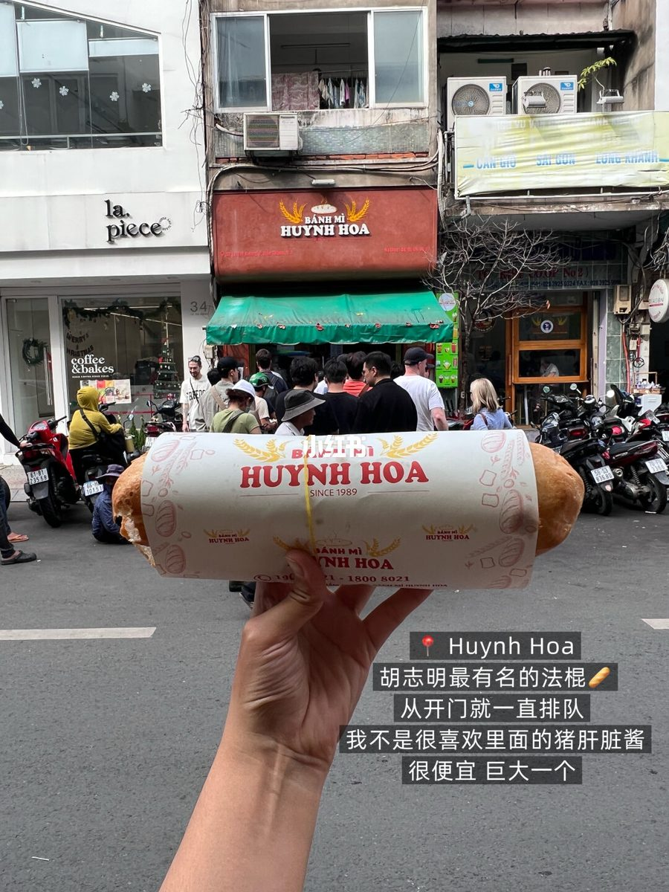
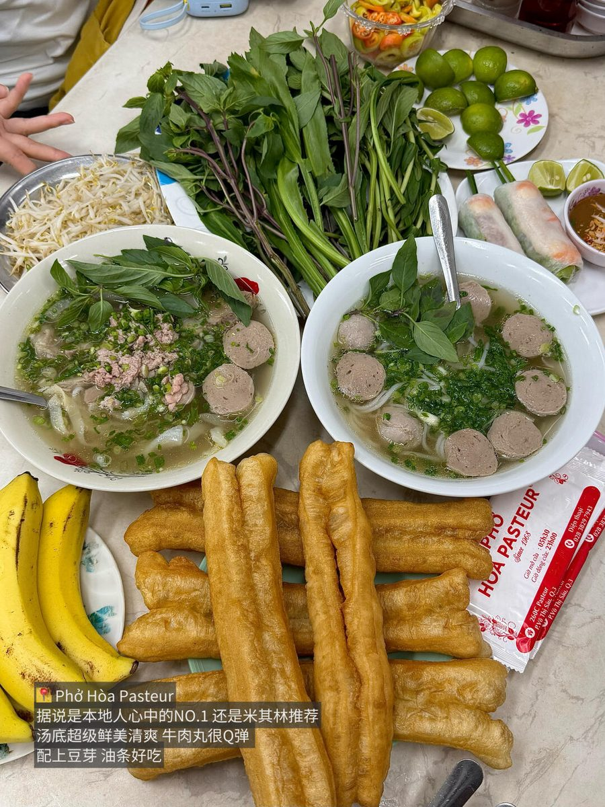
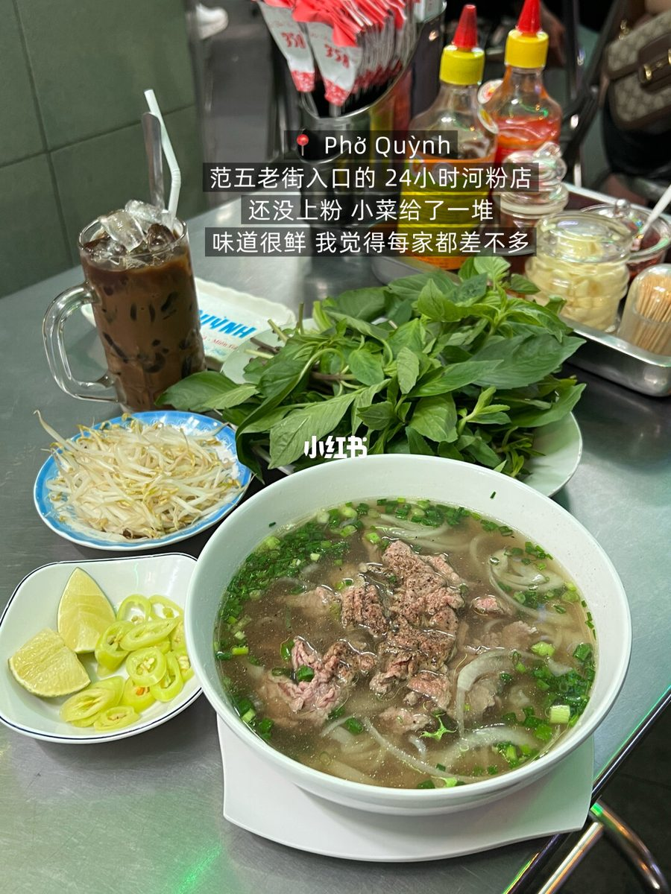
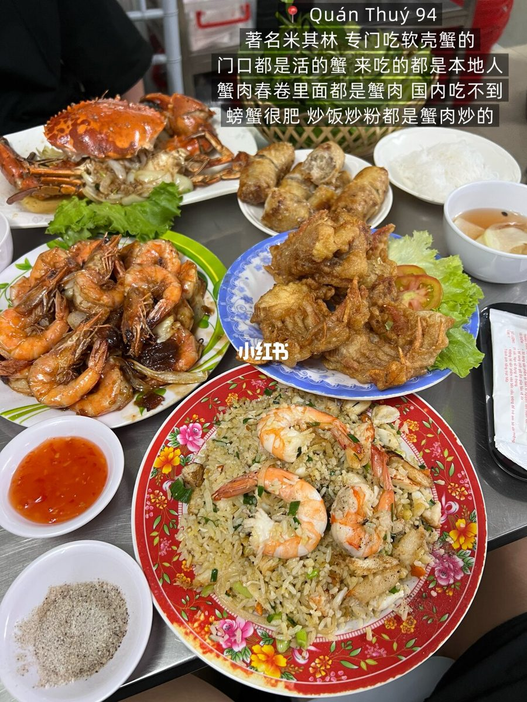
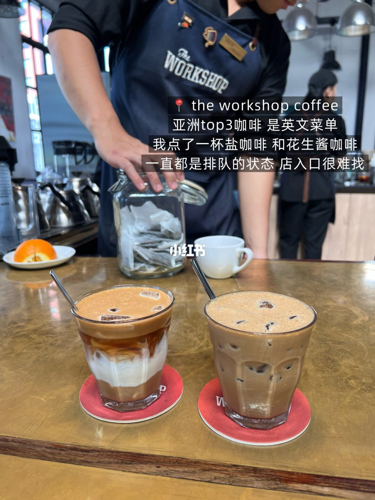
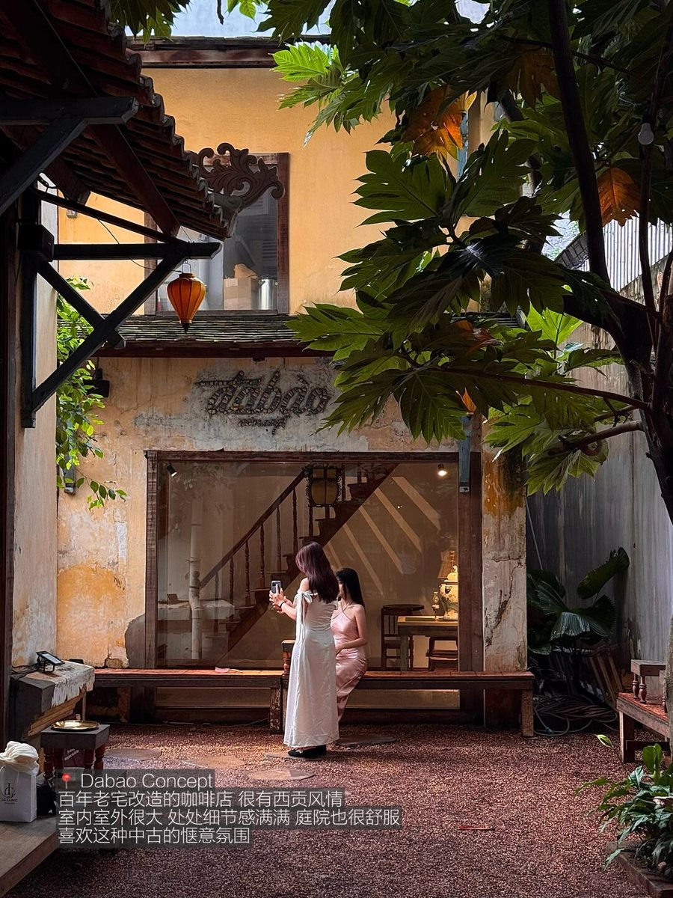
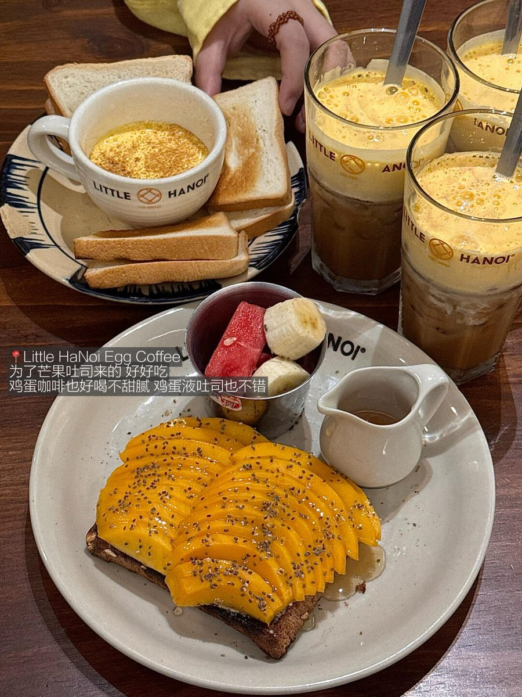
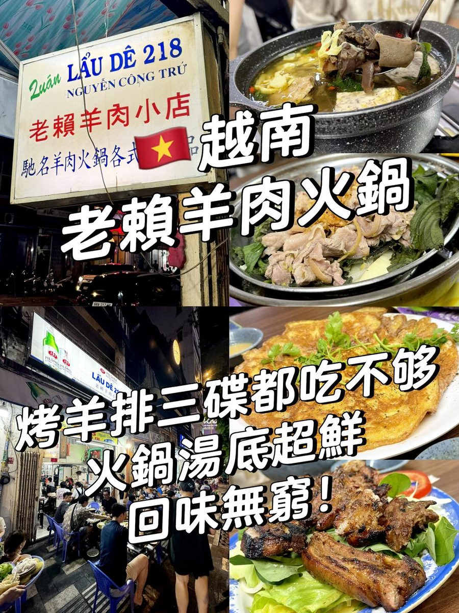
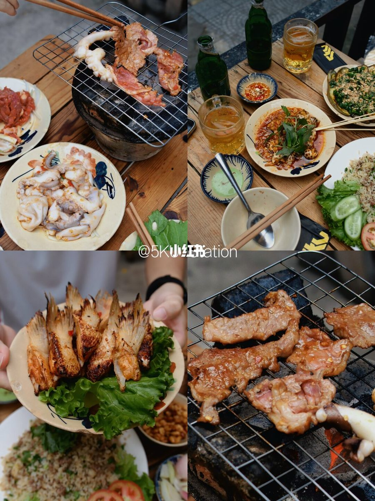

Bánh Mì Chấm
Bánh Mì ChấmDAY 2 · 08:45
🥖 Bánh Mì Chấm Hung Tubes
營業06:30–21:00評分4.6（759）類型路邊攤
越南版「麵包蘸湯」：法國麵包蘸豬肉鴨血湯，配黃瓜絲解膩。招牌是歸仁麵包浸湯，本地人早午餐路線。Quán Châu Ký 吃完走過來剛好。
Food · 57 篇筆記
從 vault 的 57 篇美食筆記挑出 11 家代表作， 另外附上完整清單（依類型分組），想吃什麼自己翻。
Bánh Mì Chấm越南版「麵包蘸湯」：法國麵包蘸豬肉鴨血湯，配黃瓜絲解膩。招牌是歸仁麵包浸湯，本地人早午餐路線。Quán Châu Ký 吃完走過來剛好。
 Bánh Mì Chảo
Bánh Mì Chảo OM Nướng
OM Nướng Quán Châu Ký
Quán Châu Ký Cộng Cà Phê
Cộng Cà Phê Pizza 4P’s
Pizza 4P’s Cửu Vân Long
Cửu Vân Long









點開分類查看。這些都在 Obsidian vault 有完整筆記。